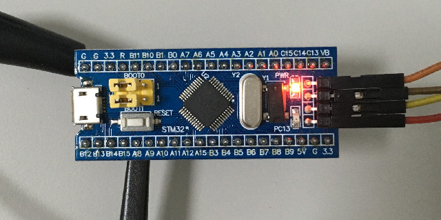
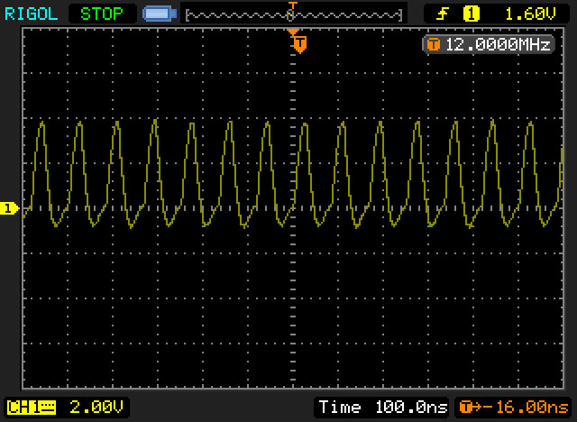
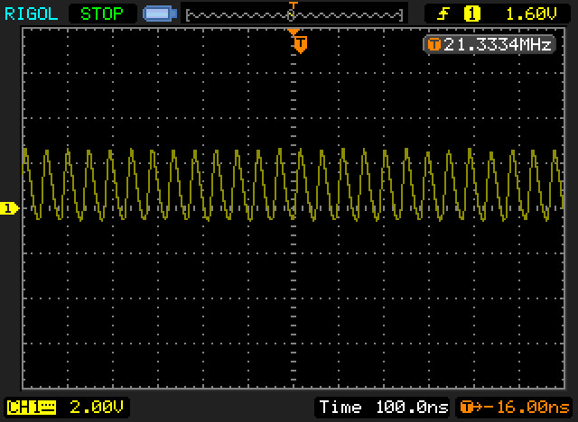

Steward
分享是一種喜悅、更是一種幸福
微處理器 - STMicroelectronics STM32F103 - Assembly - I/O Toggle 21MHz
參考資訊：
https://sourceforge.net/projects/stm32flash/files/
https://stackoverflow.com/questions/59708656/stm32f103c8-gpio-speed-limit
https://electronics.stackexchange.com/questions/318658/stm32f103c8t6-maximum-io-output-speed
main.s
.thumb
.cpu cortex-m3
.syntax unified
.equiv GPIOA_CRL, 0x40010800
.equiv GPIOA_CRH, 0x40010804
.equiv GPIOA_IDR, 0x40010808
.equiv GPIOA_ODR, 0x4001080c
.equiv GPIOC_CRL, 0x40011000
.equiv GPIOC_CRH, 0x40011004
.equiv GPIOC_IDR, 0x40011008
.equiv GPIOC_ODR, 0x4001100c
.equiv RCC_CR, 0x40021000
.equiv RCC_CFGR, 0x40021004
.equiv RCC_APB2ENR, 0x40021018
.equiv FLASH_ACR, 0x40022000
.equiv STACKINIT, 0x20005000
.global _start
.section .text
.org 0x0
.word STACKINIT
.word _start
.org 0x100
.align 2
.thumb_func
_start:
bl rcc_init
bl flash_init
ldr r4, =RCC_APB2ENR
ldr r1, =(1 << 2)
str r1, [r4]
ldr r4, =GPIOA_CRH
ldr r1, =(3 << 0)
str r1, [r4]
ldr r4, =GPIOA_ODR
ldr r1, =0xffffffff
ldr r2, =0x00000000
0:
str r1, [r4]
str r2, [r4]
@eor r2, #(1 << 8)
@str r2, [r4]
b 0b
.align 2
.thumb_func
rcc_init:
push {r4, lr}
ldr r4, =RCC_CR
mov r1, #(1 << 16)
str r1, [r4]
0:
ldr r1, [r4]
tst r1, #(1 << 17)
bne 0b
ldr r4, =RCC_CFGR
@mov r1, #(7 << 18) @ 72MHz
mov r1, #(14 << 18) @ 128MHz
orr r1, #(1 << 16)
str r1, [r4]
ldr r4, =RCC_CR
ldr r1, [r4]
orr r1, #(1 << 24)
str r1, [r4]
0:
ldr r1, [r4]
tst r1, #(1 << 25)
bne 0b
ldr r4, =RCC_CFGR
ldr r1, [r4]
orr r1, #2
str r1, [r4]
0:
ldr r1, [r4]
tst r1, #(1 << 3)
bne 0b
pop {r4, pc}
.align
.thumb_func
flash_init:
push {r4, lr}
ldr r4, =FLASH_ACR
mov r1, #0x32
str r1, [r4]
pop {r4, pc}
.end
PA8輸出

PLL 72MHz時，I/O Toggle可以達到12MHz，不過，stackoverflow的人說可以達到18MHz

PLL 128MHz時，I/O Toggle可以達到21MHz，不過，stackoverflow的人說可以達到36MHz

值得注意的是eor指令比str指令更耗時間，多了一倍指令週期，如下是PLL 128MHz時，使用eor指令的I/O Toggle速度